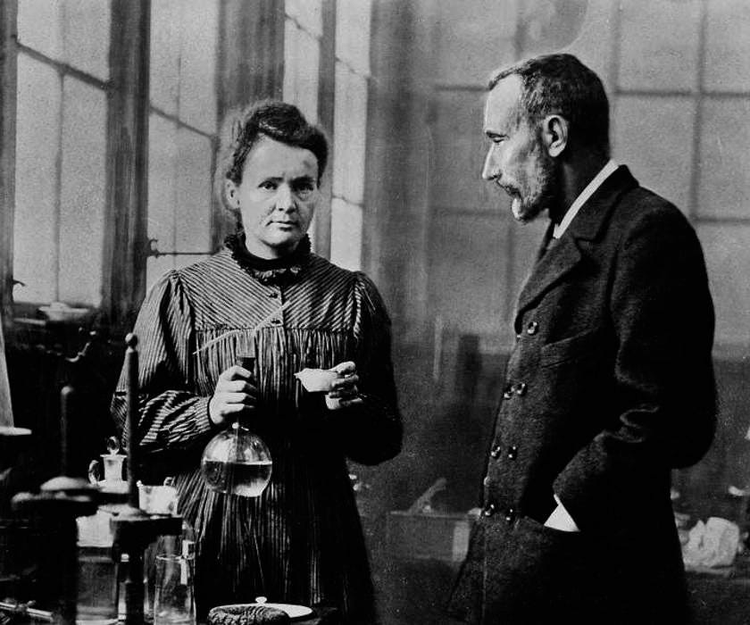

Marie Curie
Her history with radioactivity

A picture of Marie and Pierre Curie in their Paris laboratory
A timeline of Marie Curie's life:
- 1867 - Maria Salomea Skłodowska, later known as Marie Curie, is born in Warsaw, part of the Russian empire at the time.
- 1883 - Maria wins a gold medal as a top student after completing her secondary education, Her father loses his savings due to bad investments and so Maria finds employment, first as a teacher and later as a governess. She finances her sister Bronislawa's medical studies in Paris, France.
- 1891 - Maria moves to Paris to study at the Sorbonne and begins to use the name Marie. She studies to complete her degree in physics and maths.
- 1894 - Marie meets Pierre Curie who is completing his doctorate of science.
- 1895 - Marie and Pierre marry on July 25th. She takes her husband's surname.
- 1896 - A french scientist, Henry Bacquerel, discovers that the element uranium gives off unusual rays of enerergy. He passes on his findings to Marie who begins to study this phenomenon which she later names radioactivity.
- 1898 - Marie and Pierre Curie discover two new elements, later named radium and polonium. Polonium is named after Marie's homeland of Poland.
- 1903 - Marie becomes the first woman in France to earn a doctoral degree after recieving her doctorate of science in June. In November, the Curie's share the Nobel Prize for physics for their discoveries and research in radioactivity.
- 1906 - Pierre Curie dies in a traffic accident. Marie takes over his professorship at the Sorbonne, becoming the first woman to teach there.
- 1910 - Marie's fundamental treatise on radioactivity is published.
- 1911 - Marie is awarded the Nobel Prize for chemistry for the isolation of pure radium.
- 1914 - Marie and her daughter Irène Joliot-Curie devote their time to make X-Ray technologies during World War One.
- 1922 - Marie focuses her research on the chemistry of radioactive substances.
- 1932 - Marie helps open the Radium Institue in Warsaw, her sister is named the director of the institute.
- 1934 - Marie dies near Sallanches, France. Her death was the result of leukemia caused by exposure to radiation.
- 1944 - A new element is discovered by American chemists, they name it curium in honour of Marie and Pierre Curie.
Nothing in life is to be feared, it is only to be understood. Now is the time to understand more, so that we may fear less.
More information on the life of Marie Curie can be found on her Wikipedia entry.